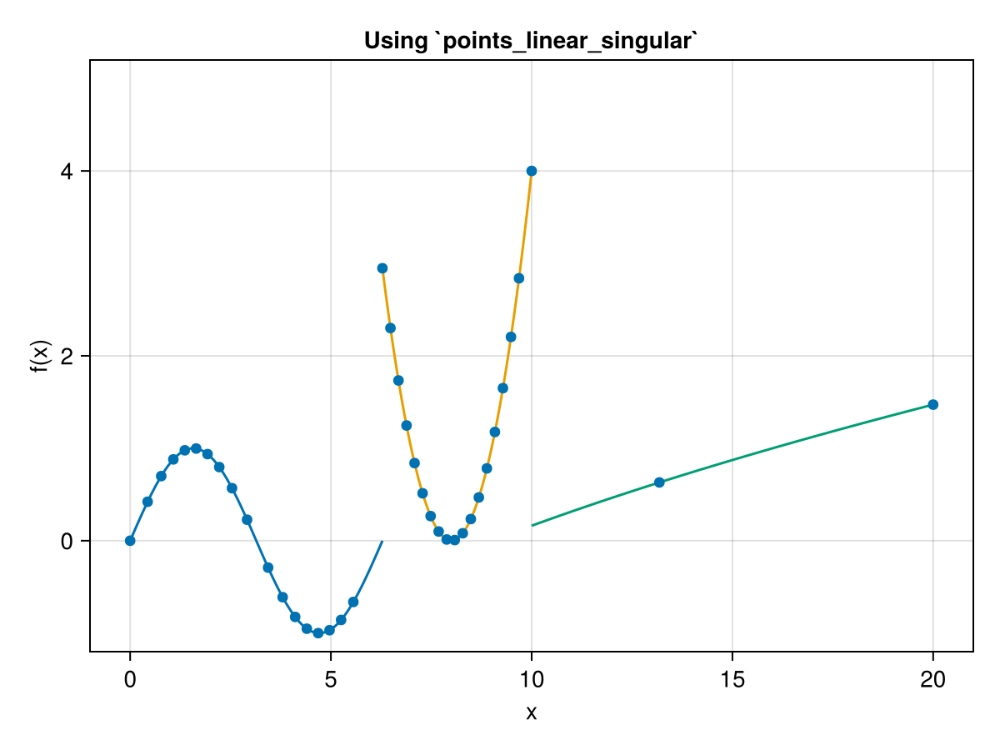

Linear interpolation
To compute the points of a linear interpolation for a given function $f(x)$, we can use the points_linear function.
AdaptiveStepSize.points_linear — Functionpoints_linear(f, domain, tol::T; scan_step = (domain[end] - domain[begin]) / 100) where T <: RealComputes points used for a linear interpolation of the function f in the given domain within a tolerance tol.
See also points_linear_singular for managing singular points.
Arguments
f: The function used for the linear interpolation. It must be of the form of f(x), wherexis a number.domain: a tuple or array representing the interpolation domain, e.g., the tuple (a, b).tol::T where T <: Real: the desired tolerance of the points. The real value of the function at any point xᵢ minus the aproximation will be smaller thantol, i.e., |f(xᵢ) - yᵢ| < tol.
Keywords
scan_step: Minimum step size that will be used to scan the whole domain. The returned points will have at least a spacing ofscan_step. Very small values will produce a very long execution time. By default it will divide the domain in 100 intervals.
Returns
(xs, ys): A tuple containing two arrays of points,xsfor the independent variable andysfor the computed values of the function.
Notes
The function f must have a continuous second derivative in order to compute the linear interpolation error. This second derivative is computed using Enzyme's automatic differentiation.
If the returned (xs, ys) contains just the endpoints, try decreasing the scan_step size and/or increasing the tolerance tol.
If the execution time of a single call to the function f is quite long, this adaptive method might not be suitable.
For example, let us apply this function to $f(x) = \sqrt{2x}$ on the interval $[0,\, 2]$ with a tolerance of $10^{-2}$.
julia> using AdaptiveStepSizejulia> f(x) = 2 * sqrt(x)f (generic function with 1 method)julia> domain = (0.0, 2.0)(0.0, 2.0)julia> tol = 1e-20.01julia> xs, ys = points_linear(f, domain, tol; scan_step = 1e-4)([0.0, 0.0004, 0.0018000000000000006, 0.005500000000000001, 0.013699999999999973, 0.029899999999999875, 0.05880000000000066, 0.10670000000000203, 0.18149999999999633, 0.2927999999999841, 0.45209999999996653, 0.6726999999999422, 0.9698999999999095, 1.3608999999998665, 2.0], [0.0, 0.04, 0.08485281374238572, 0.14832396974191328, 0.23409399821439228, 0.3458323293158109, 0.48497422611928837, 0.6532993188424492, 0.8520563361656232, 1.0822199406774653, 1.3447676379210893, 1.6403658128599756, 1.9696700231256092, 2.3331523739352016, 2.8284271247461903])
The returned xs and ys contain the points needed for the linear interpolation with an error smaller than the given tolerance. When calling the function, we have set a scan_step of $10^{-4}$. By default this value is computed such that the domain is divided in 100 steps. It is recommeneded to not set a very small value of the scan step. Depending on the desired tolerance, between 100 and 1e4 maximum possible subintervals is desired, otherwise, the execution time will be very small. It is recommendended to set the scan_step value as
julia> domain = (0.0, 2.0)(0.0, 2.0)julia> scan_step_value = (domain[end] - domain[begin]) / 1e40.0002
where the 1e4 can be the maximum number of points you want.
We can plot the points xs and ys on top of the function and observe that when $f(x)$ varies more, the points are closer, whereas the get further away when they are more linear.
Note that even though the second derivative of our function $f(x) = \sqrt{2x}$ is not defined at $x = 0$ (therefore is not continuous), there is no problem. The function points_linear will never evaluate the second derivative at the boundaries defined by the domain parameter.
Singularities
A singularity is a point at which the function is not defined or is not well-behaved. A typical example is $|x|$, in which the function is continuous at $x = 0$ but not differentiable (the derivative is not continuous at that point). For these kind of functions, we can use points_linear_singular. The only difference between this method and points_linear is that here we need to pass an extra parameter called singularities. This must be a Vector{T} where T<:Real containing all those singular points. The algorithm will compute the points for each subinterval delimited by this singularities vector.
AdaptiveStepSize.points_linear_singular — Functionpoints_linear_singular(f, domain, singularities::Vector{T}, tol::T; scan_step = (domain[end] - domain[begin]) / 100) where T <: RealComputes points used for a linear interpolation of the function f in the given domain within a tolerance tol. Manages singular points though the array singularities.
See points_linear for an in depth description of the arguments. This function needs the additional argument singularities. This must be a Vector{T} where T<:Real that contains each singular point.
A singularity in this case is a point at which the function is not well-behaved, like abs(x) at x = 0, where the function is continuous but not differentiable.
If the function has several singularities, we can write those in the singularities vector. The function points_linear will be applied at each subinterval. In addition, the second derivative will never be computed at those endpoints, i.e., at the singularities and the domain points. Note that f will be evaluated at the endpoints and it should handle those discontinuities properly. It is the user responsability to do so.
Notes
If you have a piecewise function, it might be convenient to apply points_linear at each interval of the function, instead of passing the singularities vector here. The reason is that the result contains just one big pair xs and ys vectors and it is not aware of the points where piecewise function is not continuous, hence producing undesiderable results in the interpolation.
The safest bet here is linearly interpolate each region of the piecewise function separately.
Hence, let us compute the xs and ys points for the absolute value function $f(x) = |x|$.
julia> using AdaptiveStepSizejulia> f(x) = abs(x)f (generic function with 1 method)julia> domain = (-1.0, 1.0)(-1.0, 1.0)julia> tol = 1e-20.01julia> singularities = [0.0,]1-element Vector{Float64}: 0.0julia> xs, ys = points_linear_singular(f, domain, singularities, tol; scan_step = 1e-4)([-1.0, 0.0, 1.0], [1.0, 0.0, 1.0])
Since this is a simple function made of two lines that intersect at $x = 0$, we get the expected points. Note that if you call points_linear instead of points_linear_singular you will not get the point $(0.0, 0.0)$ in the results. It is very unlikely to exactly compute a certain point when doing the scan. That is why passing explicitly the singularities to the former method is preferred. We can plot the results to see how it looks like.
Piecewise functions
If we have a piecewise function instead, it is more convenient to call points_linear at each interval of the function instead of points_linear_singular and passing the singularities vector with each case point. This is because the result contains just one big pair xs and ys vectors and it is not aware of the points where piecewise function is not continuous, hence producing undesiderable results in the interpolation.
To see this in action, let us consider the following piecewise function
\[f(x) = \begin{cases} \sin(x) &\text{if } x < 2\pi \\ (x - 8)^2 &\text{if } 2\pi \leq x \leq 10 \\ \sqrt{x} - 3 &\text{if } x > 10 \end{cases}\]
We will consider the domain $[0,\, 20]$. First, we will make use of the points_linear_singular and see why is not convenient. In Julia, we can write this as
julia> using AdaptiveStepSizejulia> function f(x) if x < 2π return sin(x) elseif x <= 10.0 return (x - 8)^2 else return sqrt(x) - 3 end endf (generic function with 1 method)julia> domain = (0.0, 20.0)(0.0, 20.0)julia> tol = 1e-20.01julia> singularities = [2π, 10.0]2-element Vector{Float64}: 6.283185307179586 10.0julia> xs, ys = points_linear_singular(f, domain, singularities, tol; scan_step = 1e-4)([0.0, 0.43549999999996836, 0.7738999999999311, 1.075499999999898, 1.3614999999998665, 1.6443999999998353, 1.9276999999998041, 2.2200000000002604, 2.5370000000009294, 2.912200000001721 … 8.484285307174456, 8.68438530717399, 8.884485307173524, 9.084585307173057, 9.284685307172591, 9.484785307172125, 9.684885307171658, 10.0, 13.181199999992586, 20.0], [0.0, 0.4218637836925768, 0.6989297890393922, 0.8798279065966838, 0.9781773602189574, 0.9972924723126391, 0.9369830917527852, 0.7965654722359292, 0.5684269858028858, 0.22738612873312744 … 0.2345322587450576, 0.4683832486756367, 0.7823142586058426, 1.1763252885356752, 1.6504163384651345, 2.2045874083942207, 2.8388384983229336, 4.0, 0.6305922381882252, 1.4721359549995796])
If we plot now the result over the piecewise $f(x)$ function, we get:
What is happening here is that the endpoints of each segment of the piecewise function do not always have a point (blue circle). If we apply linear interpolation to the whole result, we will get wrong results near those endpoints. This is because points_linear_singular is suitable only for continuous functions. To fix this, we have to call points_linear once for each segment:
julia> using AdaptiveStepSizejulia> function f(x) if x < 2π return sin(x) elseif x <= 10.0 return (x - 8)^2 else return sqrt(x) - 3 end endf (generic function with 1 method)julia> domain1 = (0.0, 2π - 1e-15) # Notice how 2π is not exactly included here(0.0, 6.283185307179585)julia> domain2 = (2π, 10.0)(6.283185307179586, 10.0)julia> domain3 = (10.0 + 1e-15, 20.0) # The same happens with x = 10.0, it is an open interval(10.000000000000002, 20.0)julia> tol = 1e-2;julia> xs1, ys1 = points_linear(f, domain1, tol; scan_step = 1e-4)([0.0, 0.43549999999996836, 0.7738999999999311, 1.075499999999898, 1.3614999999998665, 1.6443999999998353, 1.9276999999998041, 2.2200000000002604, 2.5370000000009294, 2.912200000001721, 3.436700000002828, 3.798700000003592, 4.110300000003759, 4.400300000003083, 4.683300000002424, 4.9662000000017645, 5.2537000000010945, 5.559300000000382, 6.283185307179585], [0.0, 0.4218637836925768, 0.6989297890393922, 0.8798279065966838, 0.9781773602189574, 0.9972924723126391, 0.9369830917527852, 0.7965654722359292, 0.5684269858028858, 0.22738612873312744, -0.2908425577262733, -0.6108291161898552, -0.8241542879031629, -0.9516942309279802, -0.9995769454427188, -0.967962526480151, -0.8570339020834412, -0.6623006839179572, -1.133107779529596e-15])julia> xs2, ys2 = points_linear(f, domain2, tol; scan_step = 1e-4)([6.283185307179586, 6.48328530717912, 6.6833853071786535, 6.883485307178187, 7.083585307177721, 7.2836853071772545, 7.483785307176788, 7.683885307176322, 7.883985307175855, 8.084085307175389, 8.284185307174923, 8.484285307174456, 8.68438530717399, 8.884485307173524, 9.084585307173057, 9.284685307172591, 9.484785307172125, 9.684885307171658, 10.0], [2.947452689484052, 2.3004234594187367, 1.7334742493530486, 1.246605059286987, 0.8398158892205523, 0.5131067391537443, 0.266477609086563, 0.09992849901900844, 0.01345940895108062, 0.00707033888277954, 0.0807612888141052, 0.2345322587450576, 0.4683832486756367, 0.7823142586058426, 1.1763252885356752, 1.6504163384651345, 2.2045874083942207, 2.8388384983229336, 4.0])julia> xs3, ys3 = points_linear(f, domain3, tol; scan_step = 1e-4)([10.000000000000002, 13.181199999992588, 20.0], [0.16227766016837952, 0.6305922381882252, 1.4721359549995796])
Note that when defining the domains, we are adding or substracting a very small number (1e-15). This is because the first segment is valid for $x < 2\pi$, so the first domain must be open on the right side (it cannot include the point $2\pi$). Mathematically this is represented by the interval $[0,\, 2\pi)$. On the computer, we can do the same by subtracting a very small number, i.e., domain1 = [0.0, 2π - 1e-15]. The same happens with the last segment that is only valid for $x > 10$. We cannot include the point $10$ on domain3. That is why we represent it as domain3 = [10.0 + 1e-15, 20.0]. When we plot the results we explicitly get the endpoints.
We can now apply a linear interpolation to each segment and the result will be correct.
In all of these examples we are using a high tolerance of tol = 1e-2 for the sake of clarity on the figures. If you want something more precise like tol = 1e-6 you can do it, bear in mind that when visualizing it, you have a bunch of points close together that you cannot distinguish them individually from the plot.